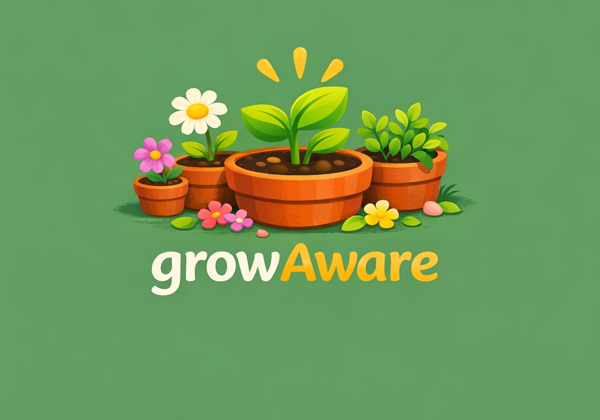

Know what's growing, what's changing, what's safe, and what needs doing — all in one simple app built around a single idea: awareness.
Snap a photo to identify plants, insects, snakes, spiders, fungi, and toxic plants — with clear safety levels and what to do next.
Create garden beds, scan seed packets to add plants, and get crop-rotation suggestions season to season.
Current conditions, live radar, and spoken severe-weather alerts for your exact location.
Hazard guidance, tap-to-call emergency numbers, and a finder for nearby garden centers and supplies.
Ask anything about plants, hazards, or resources and get a direct, location-aware answer.
Your garden data stays on your device. No account required, no data collection.
GrowAware is publishing shortly. Want to know when it's available, or interested in supporting its launch? Reach out.
Contact for more information